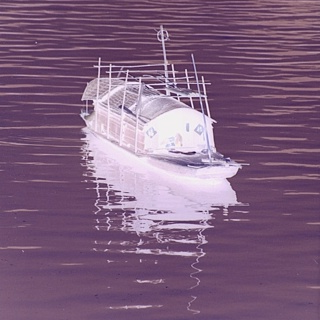

Image Processing Library

This project is a library of various transformations on an image. It was coded in Java, and was written with a team of two other members collaborating over Git. A test-driven development process was followed, and we used JUnit as our testing library.
Functions
| Method | Function |
|---|---|
| Mirror | Mirrors an image. |
| Negative | Transforms an image to its negative colors. |
| Posterize | Transforms the image into an image of only three colors. It maps each color to its nearest color among the three. |
| Denoising | Replaces a pixel color with the median value of the pixel's and its neighbouring pixels' colors. |
| Weathering | Replaces a pixel color with the minimum R,G, or B value of its neighbours. |
| Block Painting | Treats the image as a sequence of m x m blocks, and replaces the block with the average of its colors. |
| Rotation | Rotates an image. |
| Cosine Similarity | Calculates the cosine similarity between two images. |
| Discrete Fourier Transformation | Computes the DFT of the greyscale version of an image. |
| Green Screen | Performs a green screen on a source image, and the image to be green screened in. |
| Text Align | Aligns a scanned text document using its DFT. |